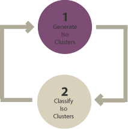
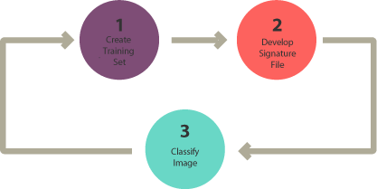
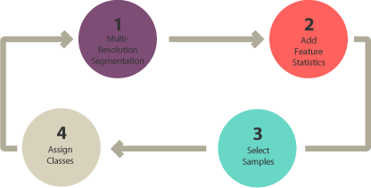

What You'll Learn
- Understand the three main classification approaches in remote sensing
- Identify when to use unsupervised vs. supervised classification
- Explain the advantages and limitations of each approach
- Recognize the role of object-based analysis for high-resolution imagery
Why This Matters
Image classification transforms raw satellite data into useful maps showing:
- Land cover: What's on the ground (forest, water, urban areas)
- Land use: How land is being used (agriculture, residential, commercial)
- Change detection: How landscapes evolve over time
The classification approach you choose directly impacts the accuracy and usefulness of your final map. Understanding the trade-offs helps you select the right method for your research question.
The Three Main Approaches
Remote sensing classification techniques fall into three main categories:
| Approach | Training Data Required? | Best For | Complexity |
|---|---|---|---|
| Unsupervised | No | Exploratory analysis, unknown areas | Low |
| Supervised | Yes | Known classes, accuracy-focused maps | Medium |
| Object-Based (OBIA) | Yes | High-resolution imagery, complex features | High |
1. Unsupervised Classification
The Concept
Unsupervised classification groups pixels into clusters based on their spectral similarity—without any prior knowledge of what's on the ground. Think of it as asking the computer: "Find me pixels that look similar to each other."

The Two-Step Process
- Generate clusters: The algorithm groups pixels based on spectral properties
- Assign classes: YOU interpret what each cluster represents (forest, water, etc.)
Common Algorithms
- K-means: Fast, requires you to specify the number of clusters
- ISODATA: Iterative, can merge/split clusters automatically
Key Decision: How many clusters should you create? Fewer clusters = more homogeneous groups. More clusters = finer distinctions but harder to interpret. A common starting point is 10-20 clusters, then merge similar ones.
When to Use Unsupervised Classification
- You're unfamiliar with the study area
- You want to explore what spectral patterns exist
- You don't have training data or ground truth
- As a first step before supervised classification
Common Mistakes
- Expecting clusters to automatically match your desired classes
- Using too few clusters and losing important distinctions
- Forgetting that clusters are based on spectral similarity, not visual similarity
2. Supervised Classification
The Concept
Supervised classification uses training data—samples where you tell the computer "this is forest, this is water, this is urban." The algorithm learns the spectral patterns of each class and then applies those patterns to classify the entire image.

The Three-Step Process
- Select training areas: Mark examples of each class on the image
- Generate signature file: Computer learns spectral characteristics of each class
- Classify: Apply the learned rules to classify all pixels
Common Algorithms
- Maximum Likelihood: Classic statistical approach, assumes normal distribution
- Random Forest: Ensemble of decision trees, robust and accurate
- Support Vector Machine (SVM): Finds optimal boundaries between classes
- CART (Decision Trees): Creates interpretable rule-based classification
Training Data Best Practices
- Collect at least 20-30 samples per class
- Distribute samples across the entire study area
- Include the variability within each class (e.g., different forest types)
- Use high-resolution imagery or field knowledge to verify locations
- Keep some samples separate for accuracy assessment (validation)
When to Use Supervised Classification
- You know exactly what classes you want to map
- You have reliable ground truth or reference data
- You need to quantify accuracy
- You're creating a map for specific applications
3. Object-Based Image Analysis (OBIA)
The Concept
Unlike pixel-based approaches, OBIA first groups pixels into meaningful objects (segments) based on spectral similarity AND spatial properties. These objects—rather than individual pixels—are then classified.

The Four-Step Process
- Segmentation: Group pixels into homogeneous objects
- Select training areas: Label example objects
- Define statistics: Choose features for classification (shape, texture, spectral)
- Classify: Assign classes to all objects
What Makes OBIA Different?
Objects contain more information than individual pixels:
🔷 Shape
Buildings are rectangular; lakes are irregular. Shape statistics like "rectangular fit" can distinguish man-made structures.
📐 Texture
Water is spectrally homogeneous (smooth). Forests have lots of variation (rough). Texture helps distinguish classes with similar colors.
🎨 Spectral
Mean values of spectral bands within each object—similar to pixel-based approaches.
📍 Context
What's next to the object? A small blue object surrounded by buildings might be a pool; surrounded by forest, it might be a pond.
Why Use OBIA?
With high-resolution imagery (1-5 meter pixels), individual pixels often don't represent complete features. A building roof might span dozens of pixels with different colors. OBIA groups these into a single object, making classification more intuitive and accurate.
Common Segmentation Algorithms
- Multi-resolution segmentation (eCognition)
- Segment Mean Shift (ArcGIS)
- SNIC (Google Earth Engine)
Choosing the Right Approach
| Factor | Unsupervised | Supervised | Object-Based |
|---|---|---|---|
| Training effort | None | Moderate | High |
| Accuracy potential | Lower | High | Highest (for HR imagery) |
| Best resolution | Any | Medium (10-30m) | High (< 5m) |
| GEE support | Excellent | Excellent | Limited |
Decision Flowchart
- New to the area? → Start with unsupervised to explore
- Have training data and know your classes? → Use supervised
- High-resolution imagery with complex features? → Consider OBIA
- Large area, moderate resolution, in GEE? → Supervised (Random Forest)
Check Your Understanding
- What's the main difference between unsupervised and supervised classification?
- Why might an unsupervised cluster NOT correspond to a single land cover class?
- When would you choose object-based classification over pixel-based?
- What are three pieces of information (beyond spectral values) that OBIA can use?
Key Takeaways
- Unsupervised: Groups pixels by similarity, YOU interpret the clusters
- Supervised: YOU provide training data, computer learns patterns
- Object-Based: Groups pixels into objects first, then classifies
- No single approach is "best"—choose based on your data, goals, and resources
- Supervised classification in Earth Engine (Random Forest) is powerful and accessible
Additional Resources
This content is adapted from: GIS Geography - Image Classification Techniques